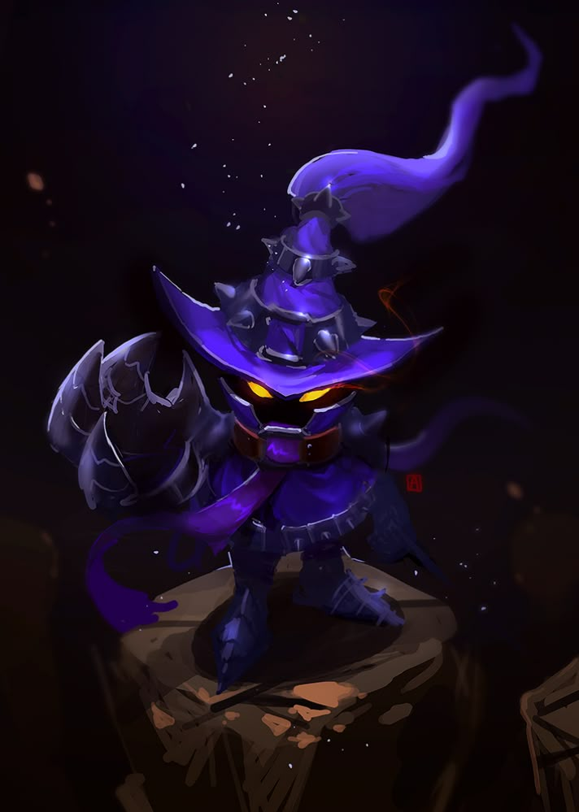

|  | BIOGRAFIA |
|---|---|
|
Veigar é um yordle que buscou aprender magia sombria para se libertar das limitações de seu povo,
que costumava ser alegre e brincalhão. Por causa de séculos preso e influenciado por forças malignas,
ele acabou adotando o papel de “mago do mal”, mas sua maldade é exagerada e teatral quase cômica.
Mesmo assim, Veigar domina forças arcanas colossais e se tornou uma das criaturas mais perigosas de Runeterra,
sempre tentando provar que é o maior vilão de todos. | |
| ARMAS | |
|
Cajado Sombrio: Seu foco arcano. Canaliza magia negra e aumenta o poder de seus feitiços. Magia do Caos: Manipula escuridão pura — feitiços destrutivos, explosivos e crescentes. Quanto mais magia ele usa, mais forte ele fica. | |
| Habilidades | |
|
Golpe Maligno: Dispara um feitiço de escuridão que causa dano e aumenta permanentemente seu poder mágico. Prisão de Matéria Negra: Cria uma jaula de energia que prende e atordoa inimigos. Explosão Primordial: Concentra toda sua energia sombria em um único ataque devastador. |